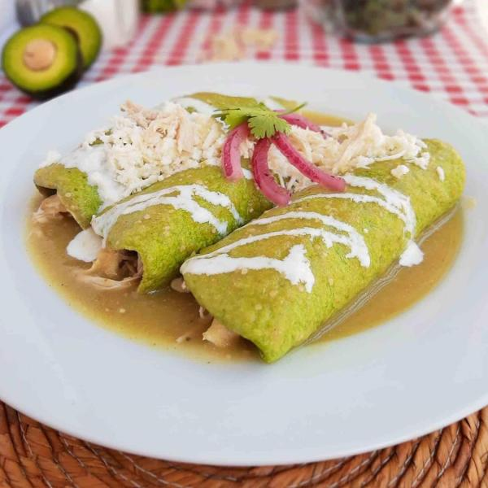

Enchiladas Verdes
Ingredientes:
12 tortillas de maíz
500 g de pechuga de pollo cocida y desmenuzada
400 g de tomatillo
2 chiles serranos
1 diente de ajo
½ cebolla
200 g de crema
200 g de queso fresco desmenuzado
Aceite vegetal
Sal
Preparación:
Preparar la salsa:
Cocina los tomatillos y los chiles en agua hirviendo durante unos 5 minutos. Una vez cocidos, lícualos junto con la cebolla, el ajo y un poco de sal hasta obtener una salsa homogénea.
SIGUIENTE PASO

VOLVER
Creador de la página web: Martín Veiga Álvarez